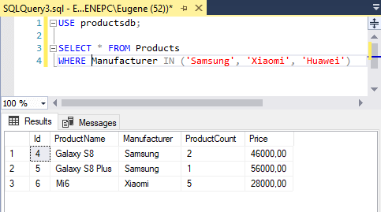
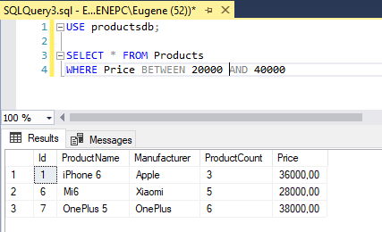
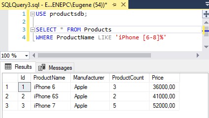

Операторы фильтрации
Оператор IN
Оператор IN позволяет определить набор значений, которые должны иметь столбцы:
1 | WHERE выражение [NOT] IN (выражение) |
Выражение в скобках после IN определяет набор значений. Этот набор может вычисляться динамически на основании, например, еще одного запроса, либо это могут быть константные значения.
Например, выберем товары, у которых производитель либо Samsung, либо Xiaomi, либо Huawei:
1 2 | SELECT * FROM ProductsWHERE Manufacturer IN ('Samsung', 'Xiaomi', 'Huawei') |

Мы могли бы все эти значения проверить и через оператор OR:
1 2 | SELECT * FROM ProductsWHERE Manufacturer = 'Samsung' OR Manufacturer = 'Xiaomi' OR Manufacturer = 'Huawei' |
Но использование оператора IN гораздо удобнее, особенно если подобных значений очень много.
С помощью оператора NOT можно найти все строки, которые, наоборот, не соответствуют набору значений:
1 2 | SELECT * FROM ProductsWHERE Manufacturer NOT IN ('Samsung', 'Xiaomi', 'Huawei') |
Оператор BETWEEN
Оператор BETWEEN определяет диапазон значений с помощью начального и конечного значения, которому должно соответствовать выражение:
1 | WHERE выражение [NOT] BETWEEN начальное_значение AND конечное_значение |
Например, получим все товары, у которых цена от 20 000 до 40 000 (начальное и конечное значения также включаются в диапазон):
1 2 | SELECT * FROM ProductsWHERE Price BETWEEN 20000 AND 40000 |

Если надо, наоборот, выбрать те строки, которые не попадают в данный диапазон, то применяется оператор NOT:
1 2 | SELECT * FROM ProductsWHERE Price NOT BETWEEN 20000 AND 40000 |
Также можно использовать более сложные выражения. Например, получим товары, запасы которых на определенную сумму (цена * количество):
1 2 | SELECT * FROM ProductsWHERE Price * ProductCount BETWEEN 100000 AND 200000 |
Оператор LIKE
Оператор LIKE принимает шаблон строки, которому должно соответствовать выражение.
1 | WHERE выражение [NOT] LIKE шаблон_строки |
Для определения шаблона могут применяться ряд специальных символов подстановки:
%: соответствует любой подстроке, которая может иметь любое количество символов, при этом подстрока может и не содержать ни одного символа
_: соответствует любому одиночному символу
[ ]: соответствует одному символу, который указан в квадратных скобках
[ - ]: соответствует одному символу из определенного диапазона
[ ^ ]: соответствует одному символу, который не указан после символа ^
Некоторые примеры использования подстановок:
WHERE ProductName LIKE 'Galaxy%'Соответствует таким значениям как "Galaxy Ace 2" или "Galaxy S7"
WHERE ProductName LIKE 'Galaxy S_'Соответствует таким значениям как "Galaxy S7" или "Galaxy S8"
WHERE ProductName LIKE 'iPhone [78]'Соответствует таким значениям как "iPhone 7" или "iPhone8"
WHERE ProductName LIKE 'iPhone [6-8]'Соответствует таким значениям как "iPhone 6", "iPhone 7" или "iPhone8"
WHERE ProductName LIKE 'iPhone [^7]%'Соответствует таким значениям как "iPhone 6", "iPhone 6S" или "iPhone8". Но не соответствует значениям "iPhone 7" и "iPhone 7S"
WHERE ProductName LIKE 'iPhone [^1-6]%'Соответствует таким значениям как "iPhone 7", "iPhone 7S" и "iPhone 8". Но не соответствует значениям "iPhone 5", "iPhone 6" и "iPhone 6S"
Применим оператор LIKE:
1 2 | SELECT * FROM ProductsWHERE ProductName LIKE 'iPhone [6-8]%' |
